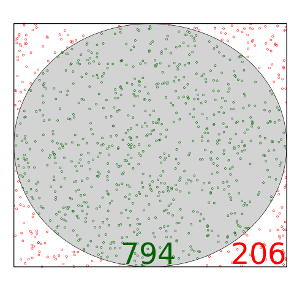

5 Functions and Recursion
A function is a unit of code. You can write a piece of code in a function and give it a name and then use it again and again from different places. It’s wise to create your own functions as your projects get more complex. There are many functions available to you out of the box. We’re going to use one such function “rand()” – a random number generator – to calculate pi using a technique called the Monte Carlo method. Now, of course, getting the value of pi isn’t hard. With PHP, we could make use of a special variable “M_PI” that you’ll notice lacks the “$” which most php variables begin with. It’ll be fun to use the Monte Carlo method, and we’ll compare our value to M_PI to gauge how accurate our method is.
In your terminal, run >php -a to get access to an interactive shell. I find this useful for trying out snippets of code. Try it yourself. If we simply use rand() we get a bunch of large positive numbers. You can run this multiple times in an interactive session to see what it outputs.

To calculate pi, I want to generate two numbers to make a coordinate. The range of each random number should be from -1 to 1. We’ll check the coordinate and see if it is inside a circle with radius one. After enough random points are placed, we can tease pi out of the ratio of total points and points inside the circle.
<?php
$x=0;
$y=0;
$inside_total = 0;
$total = 0;
for($i = 0; $i < 10000; $i++) {
// generate random numbers in (-10000,10000) and scale to (-1, 1)
$x = rand(-10000,10000)/10000;
$y = rand(-10000,10000)/10000;
// check if the random point is inside the circle
if($x*$x+$y*$y <= 1 ) {
// keep track of points inside the circle
$inside_total++;
}
// keep track of all points
$total++;
}
// estimate pi
$pi_approx = 4*($inside_total/$total);
// calculate error
$error=(($pi_approx-M_PI)/M_PI)*100;
print("Pi is approximately: $pi_approx\n");
print("The error was: ".$error."%\n");Let’s write our own function now. We’ll continue with something similar to what we did in the Monte Carlo example. Let’s code a function that takes a coordinate and a radius, and returns true if the coordinate is inside a circle of the specified radius and false otherwise. A function like that looks like this:
function inside_circle ($x, $y, $radius) {
if($x*$x+$y*$y <= $radius**2) { // "$a**$b" is $a raised to the power $b
return true;
} else {
return false;
}
}We use return to pass a result back to wherever the original call to the function came from. We can now combine our last two pieces of code into this:
<?php
$x=0;
$y=0;
$inside_total = 0;
$total = 0;
// functions need to be declared before they are used
function inside_circle ($x, $y, $radius) {
if($x*$x+$y*$y <= $radius**2) { // "$a**$b" is $a raised to the power $b
return true;
} else {
return false;
}
}
for($i = 0; $i < 10000; $i++) {
// generate random numbers in (-10000,10000) and scale to (-1, 1)
$x = rand(-10000,10000)/10000;
$y = rand(-10000,10000)/10000;
// check if the random point is inside the circle and
// replace the conditional with a call to inside_circle
if(inside_circle($x, $y, 1)) {
// keep track of points inside the circle
$inside_total++;
}
// keep track of all points
$total++;
}
// estimate pi
$pi_approx = 4*($inside_total/$total);
// calculate error
$error=(($pi_approx-M_PI)/M_PI)*100;
print("Pi is approximately: $pi_approx\n");
print("The error was: ".$error."%\n");If-statements can contain if-statements, loops can contain loops, and functions can contain functions! But functions can do something a bit spooky, a function can call itself from inside itself. This is called recursion. Let’s write a recursive function to find the n-th value in the Fibonacci sequence. The Fibonacci sequence begins 1, 1, 2, 3, 5, 8, … and the rule for generating the next term is to add the last two.
function fib($n) {
if($n == 1 || $n == 2) {
return 1;
} else {
return(fib($n-1)+fib($n-2));
}
}I’ll encourage you to try out the interactive PHP shell once more. Start it by entering >php -a in your terminal. Write the fib() function yourself and then you can call it and print the results you get by typing >echo fib(1);
“echo” is just another way to print things in PHP. If you didn’t include “echo” you wouldn’t see anything. Calling fib() just returns a value, but doesn’t do anything with it. Most of the time, you’ll do something with it like store it in a variable or print it.
Exercises:
Write a recursive function to calculate the factorial of a positive integer or zero. It might be helpful to know that 0! is equal to 1.
Can you modify the code utilizing the Monte Carlo method to calculate pi, and run the simulation in three dimensions or even higher dimensional spaces? Does changing the dimension of the simulation have any impact on the accuracy of the result?